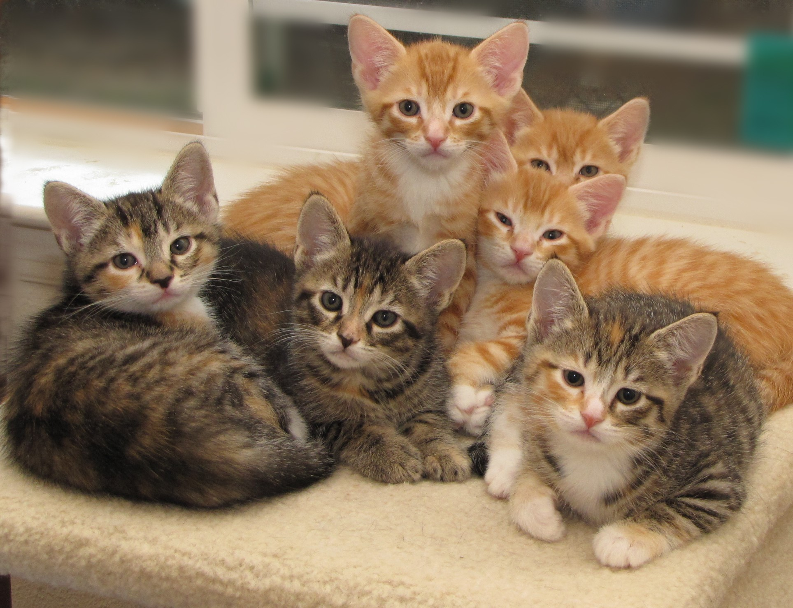
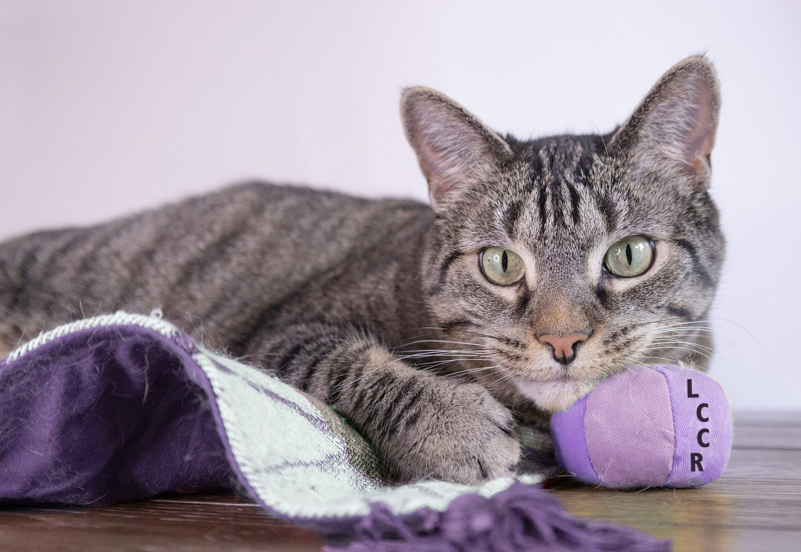
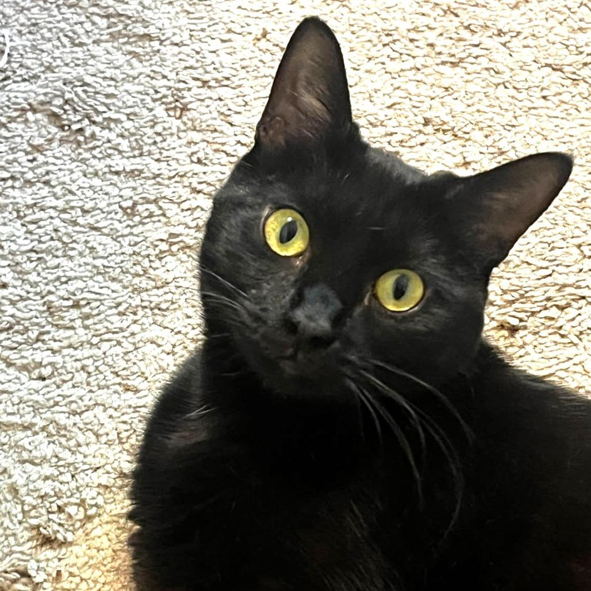
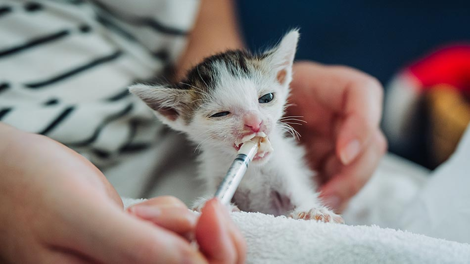

Every cat deserves a safe home, warm cuddles, and a family that truly cares. We believe every rescued cat, no matter their past, deserves a second chance at a happy life filled with love and comfort. We connect these cats with kind-hearted people ready to adopt. Whether you’re looking for a playful kitten or a calm, gentle companion, each cat has a unique story and is waiting for a forever home. By adopting, you’re not just giving a cat a home—you’re giving them a new beginning. Start your journey today and make a difference in a life… and maybe your own. 🐾
Browse our available cats and learn their stories.
Choose the cat that feels right for you and your home.
Complete a simple adoption application form.
Meet the cat in person and spend some time together.
Finalize the adoption and welcome your new companion home.

Milo went from shy and injured to playful and full of love.

Once scared and alone, Luna now lives happily in a loving home.

Rescued as a tiny kitten, Bella now enjoys a warm and happy life.
© 2026 Feline Friends Adoption. All rights reserved.


+855 61 789 957
info@felinefriends.com